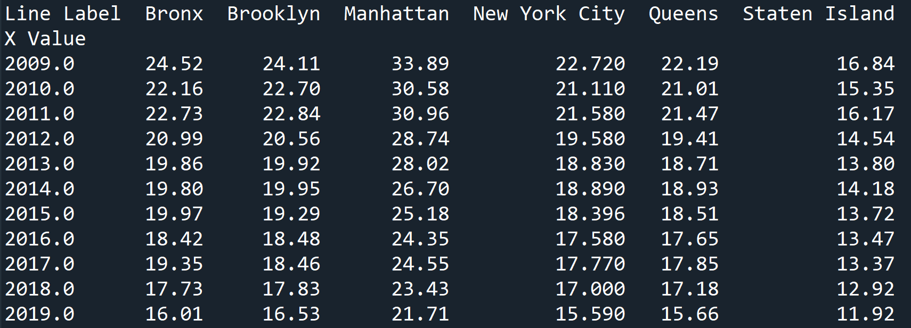
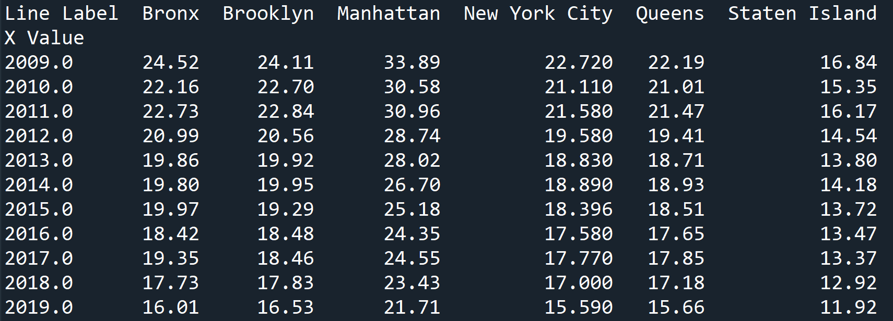

Improvement in Air Quality

I have shown the pollutant calculation method for each administrative district. It proves that as the trend has decreased, air quality has improved over the years. This issue is very important because air quality affects everything around us, and air pollution has a negative impact on our bodies and lungs, especially young children and the elderly. Recognition of this will contribute to everyone's overall health.


 
